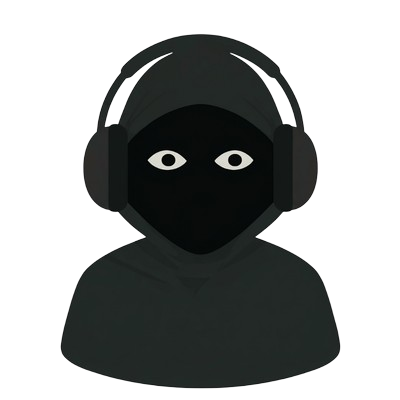

Tarayıcınızda çalışan, yerel dosyalarınızı tam anlamıyla yöneten güçlü ve modern bir müzik oynatıcısı. İnternet bağlantısına gerek yok.
FK Music'in sunduğu tüm güçlü özellikler tek bir bakışta.
Klavyenizle tam kontrol — hızlı ve verimli müzik deneyimi.
FK Müzik uygulamasının canlı önizlemesi
